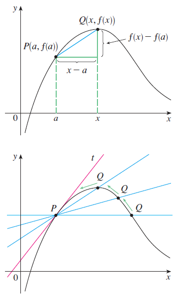

Differentiation
Univariable Differentiation
To solve optimization problems, it is required to know about derivatives because derivatives are mostly used 최적화 문제를 풀기위해 미분이 항상 사용되기 떄문에 미분에 대해서 알 필요가 있다.
Kwangmin Kim
February 4, 2023
- 입력에 대한 변화율을 조절하고 싶을 때 필요한 개념
- ex) 시약 농도 대비 증폭의 변화율을 관찰
- 하지만 관심의 대상의 관계 그래프가 직선이 아닌 곡선의 형태의 경우 평균 변화율이 자세한 정보를 제공해주지 못함
- sigmoid 형태의 경우 첫 포인트와 마지막 포인트의 평균 변화율을 보는 것 보다 구간을 짧게하여 여러 군데서 관찰하는 것이 graph를 더 잘 설명하는 것
- b와 a의 간격을 충분히 가깝게 하여 관찰 (\(\epsilon-\delta\) method)
- 순간 변화율 = 미분 계수 = 접선의 기울
- 도함수 (derivative) : 특정 포인트에서의 순간 변화율 (값)을 출력하는 함수
- 문제를 풀때 도함수를 구하는 것인지, 미분계수를 계산하는 것인지를 구별해야함
- 전체 도함수를 구하는것은 보통 굉장히 어려움. 하지만 한점에서의 순간변화율 즉, 미분계수를 구하는 것은 가능
- 에러를 줄이는 데에는 값으로 나오는 순간 변화율을 구하는 것이 일반적으로 실현성이 있는 문제
- Lagrange’s notation: \(y', f'(x)\)
- Leibniz’s notation: \(\frac{dy}{dx}=\frac{df}{dx}=\frac{d}{dx}f(x)\)
- Newton’s notation: \(\dot{y}, \ddot{y}\)
- Euler’s notation: \(D_xy, D_xf(x)\)
- \(f(x)=c\) where c is a constant
- \(f(x)=\log x\)
- \(f(x)=e^x\)
- \(f(x)=\sin x\)
The Power Rule, if \(n\) is any real number, then the power function, \(x^n\) is differentiated like the following: \[ \frac{d}{dx}(x^n)=nx^{n-1} \]
The Constant Multiple Rule, if \(c\) is a constand and \(f\) is a differentiable function, then \[ \frac{d}{dx}(cf'(x))=c\frac{d}{dx}f(x)=cf'(x) \]
The Sum Rule, if \(f\) and \(g\) are both differentiable, then \[ \frac{d}{dx}[f(x)+g(x)]=\frac{d}{dx}[f(x)]+\frac{d}{dx}[g(x)]=f'(x) +g'(x) \]
The Difference Rule, if \(f\) and \(g\) are both differentiable, then \[ \frac{d}{dx}[f(x)-g(x)]=\frac{d}{dx}[f(x)]-\frac{d}{dx}[g(x)]=f'(x) -g'(x) \]
The Product Rule, if \(f\) and \(g\) are both differentiable, then \[ y=f(x)g(x), y'=f'(x)g(x)+f(x)g'(x) \]
The quotient rule, if \(f\) and \(g\) are both differentiable, then \[ y=\frac{f(x)}{g(x)}, y'=\frac{f'(x)g(x)-f(x)g'(x)}{g(x)^2} \]
- \(S(x)=\frac{1}{1+e^{-ax}}\) 를 \(x\) 에 대해 미분해보시오.
- \(f(x)=\alpha_1 + \frac{\alpha_2-\alpha_1}{1+10^{-\alpha_4(x-\alpha_3)}}\) 를 어떻게 미분할 것인지 생각해 보시오.
- \(y=f(x)=(4x+3)^2\) 를 \(x\) 에 대해 미분해보시오
- \(y=f(x)=(4x+3)^{20}\) 를 \(x\) 에 대해 어떻게 미분할 것인지 생각해보시오. (hint: composite function - Leibniz)
일 변수 함수의 미분
Definition 1 The slope of line connected with the two points \(P_1(x_1,y_1) and P_2(x_2,y_2)\) is \[ m=\frac{y_2-y_1}{x_2-x_1} \]
Theorem 1 The point slope equation of line through \(P_1(x_1,y_1)\) with slope \(m\) is \[ y-y_1=m(x-x_1) \]
Theorem 2 The slope intercept euation of line with slope m and y-intercept b is \[ y=mx+b \]
\[ \begin{aligned} \text{기울기}(slope)&=\frac{\text{출력의 변화량}}{\text{입력의 변화량}}\\ &= \text{입력 변화량에 대한 출력 변화량} \\ &=\frac{\Delta output}{\Delta input}\\ &= \text{단위 입력당 출력의 변화량}\\ &= \text{민감도, 평균 변화율 (Rates Of Change), or etc}.\\ \end{aligned} \]
Definition 2 \[ \begin{aligned} \text{평균 변화율}&=\Delta x\text{에 대한} \Delta y\text{의 비율}\\ &=\frac{\Delta y}{\Delta x}=\frac{f(b)-f(a)}{b-a}\\ &=\frac{f(a+\Delta x)-f(a)}{\Delta x} \end{aligned} \]
Definition 3 The tangent line to the curve \(y=f(x)\) at the point \(P(a,f(a))\) is the line through P with slope
\[ m = \lim_{x\to a} f(x) \]
provided that this limit exists.
Definition 4 When \(f: \mathbb{R} \rightarrow \mathbb{R}\) is continuous and differentiable, the derivative of a function \(f\) at a number \(a \in \mathbb R\), denoted by \(f'(a)\), is
\[ \begin{aligned} f'(a) &= \lim_{h\to 0} \frac{f(a+h)-f(a)}{h} &= \lim_{x\to a} \frac{f(x)-f(a)}{x-a} \end{aligned} \]
provided that this limit exists. 이때 위의 함수의 극한값, \(f'(a)\) 라고도 표시하며 점 \(a\) 에서의 \(f(x)\) 의 도함수 (derivative) 라고 한다.

Definition 5 A function \(f\) is differentiable at \(a\) if \(f'(a)\) exists. It is differentiable on an open interval (a,b) [or (a,\(\infty\)), (-\(\infty\),a) or (-\(\infty\),\(\infty\))] if it is differentiable at every number in the interval.
Theorem 3 If \(f\) is differentiable at \(a\), then \(f\) is continuous at \(a\).
Definition 6 The natural number, \(e\) is the number such that \(\lim_{h\to 0} \frac{e^h-1}{h}=1\).
모든 지수 함수 \(f(x)=a^x\) 중에서 \(f(x)=e^x\) 가 점 (0.1) 에서의 접선의 기울기가 \(f'(0)=1\) 이 되는 수를 \(e=2.71828...\) 라고 정의한다.
Notation
\(f'(x)\) 는 다음과 같은 기호들로도 흔히 표현된다.
Example
다음의 함수를 정의를 이용하여 도함수를 계산하시오
Theorem 4
증명은 James Stewart의 Calculus Series 중 1개를 골라 참고하시기 바랍니다.